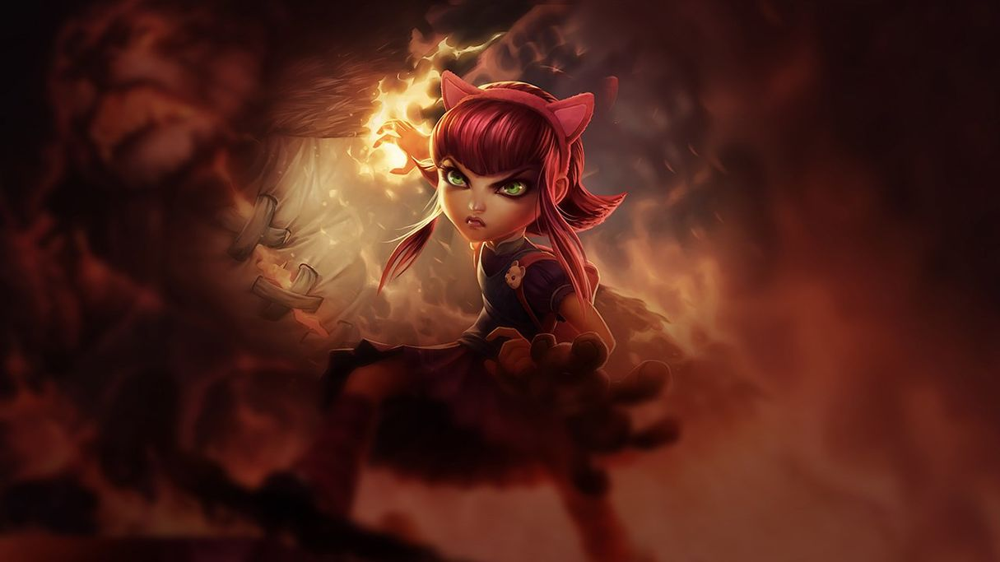

Lorsque l'Invocateur atteint le niveau 30 et possède au moins 20 champions, il est possible de se lancer dans un des 3 formats de parties classantes (classements indépendants) : SoloQ/DuoQ, Flexible, Draft. Le classement global du joueur est calculé grâce au système « Match-Making Rating » ou 'MMR', lui-même fortement inspiré du système de classement 'Elo' des joueurs d'échecs. Ce nombre de points est secret et inaccessible pour le joueur. Le classement officiel est divisé en 5 ligues (dans l'ordre croissant : Bronze, Argent, Or, Platine, Diamant) elles-mêmes organisées en 5 divisions (dans l'ordre croissant : V, IV, III, II et I). Chaque match va rapporter des Points de Ligue (LP). Lorsque le joueur atteint 100 Points de Ligue, il a la possibilité d'entrer dans la ligue supérieure au travers de matchs de barrage. Ceux qui ont au final plus de victoires que de défaites dans ces matchs de barrage passent dans la division/Ligue supérieure : Les Séries de Division : 2 victoires sur 3 matchs maximum pour passer dans la Division supérieure Les Séries de Promotion : 3 victoires sur 5 matchs maximum pour passer dans la Ligue supérieure Il n'est pas possible de passer dans une ligue inférieure, sauf une fois par an, où toutes les équipes sont recentrées automatiquement et mathématiquement, en fonction de leur MMR autour de la Ligue Argent. Outre le fait d'équilibrer les équipes lors des parties simples, le MMR permet de calculer la valeur ajoutée du joueur lors d'un match donné, et donc d'attribuer plus ou moins de points personnalisés au nombre de points liés au contexte de la partie, et faisant évoluer son MMR. Au final, le joueur connaîtra son nouveau LP sachant que s'il a 100 LP, il aura le même MMR qu'un joueur de la Division supérieure. Par ailleurs, en dessous du Niveau Gold, un joueur ayant de mauvais résultats peut avoir un MMR inférieur au MMR minimal de sa division, il ne sera pas reclassé pour autant, mais le système de ranking fera qu'il pourra faire perdre beaucoup de LP à un adversaire qu'il viendrait à tuer. À partir de la Ligue Platine, il est possible de perdre des LP pour inactivité (au delà de 28 jours).
Lors de ses débuts en ranking, les 10 premiers matchs ont une valeur d'affectation pour arriver directement dans la ligue et la division qui correspond au niveau de jeu du joueur (entre Bronze et Platine). À chaque début de saison : La Ligue maître est vidée de ses membres (qui repassent en Platine V), tous les joueurs sont recentrés autour de la League argent (i.e. les joueurs en Ligue d'Or peuvent être amenés à rétrograder), après ce recentrage, les 10 premiers matchs ont aussi une valeur de classement.
Ce sont des Ligues sans division. Lorsqu'un joueur a atteint 100 LP en Diamant 1, il peut passer Master après un dernier « Barrage ». Il n'aura plus de matchs de Barrages, il a atteint le dernier niveau « standard » de League of Legends. Ses LP peuvent alors s'accumuler indéfiniment. Si à ce moment, le joueur fait partie sur son serveur des 200 meilleurs joueurs ou si son équipe fait partie des 50 meilleures (en fonction des LP), il est alors promu pour 24 heures « Challenger ». Les meilleurs challengers peuvent alors participer au « Challenger Series » l'équivalent de la seconde division de LoL.
League of Legends a reçu des critiques globalement favorables. Il détient en février 2015 un score Metacritic de 78 sur 100, basé sur 37 critiques. Le jeu a fait l'objet de critiques pour le manque de fiabilité des serveurs ainsi qu'un gameplay non modéré (joueurs agressifs, harcèlement)[réf. souhaitée]. Cependant, un système de signalement (ou de report) a été mis en place, principalement lors de harcèlement verbal, de perturbation intentionnelle de jeu, de rester AFK pendant de longues périodes de temps ou de quitter le jeu en pleine partie. Le cumul de « reports » entraîne à terme la fermeture du compte du joueur à travers un système à plusieurs étapes passant par des avertissements et des fermetures temporaires. De plus, un système de liste noire permet d'ignorer les joueurs malpolis ou injurieux. Le même système inclut également la possibilité d'« honorer » un joueur pour son comportement positif durant la dernière partie.
Le 26 juillet 2011, dans un message adressé aux joueurs des différentes plates-formes, le Président de Riot Games annonça que le jeu avait atteint un niveau sans précédent d'inscrits. En effet, il compte plus de 30 millions d'inscrits, dont 4 millions d'actifs. Aux moments de grande affluence, plus de 500 000 personnes jouent simultanément, et chaque seconde 10 parties sont créées. En juillet 2012, Xfire a publié un rapport indiquant que League of Legends a été le jeu PC le plus joué en Amérique du Nord et en Europe, avec 1,3 milliard heures de connexion par les joueurs utilisant Xfire et League of Legends simultanément entre juillet 2011 et juin 2012. En mars 2013, Riot Games annonce 5 millions de connexions simultanées et que le nombre moyen d'heures jouées à League of Legends à travers le monde est de 1 milliard par mois. En octobre 2013, Riot Games annonce 70 millions d'inscrits, dont 32 millions d'actifs66. Début 2014, Riot Games annonce que 67 millions de joueurs jouent à League of Legends chaque mois et jusqu'à 7,5 millions de joueurs simultanément. En 2016 Riot Games annonce 100 millions de joueurs actifs.
Site officiel: League of Legends
Précédent